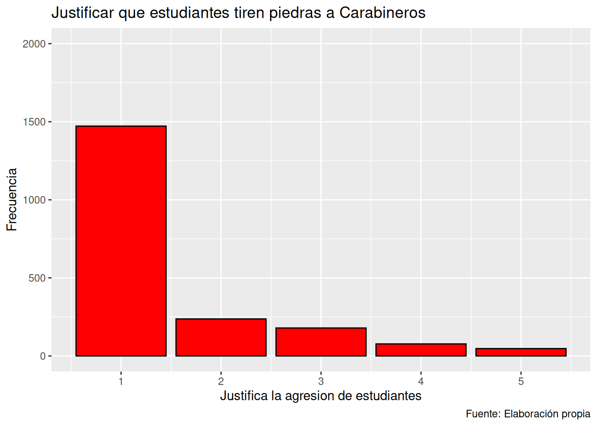
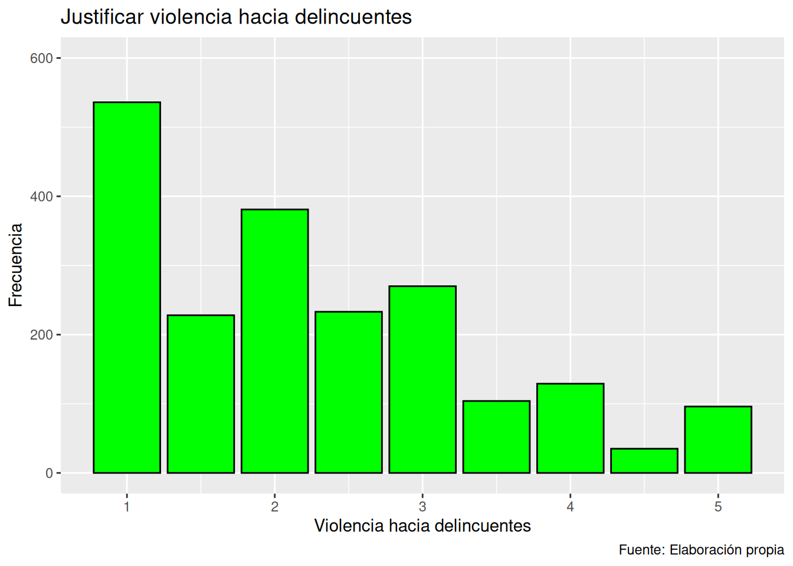
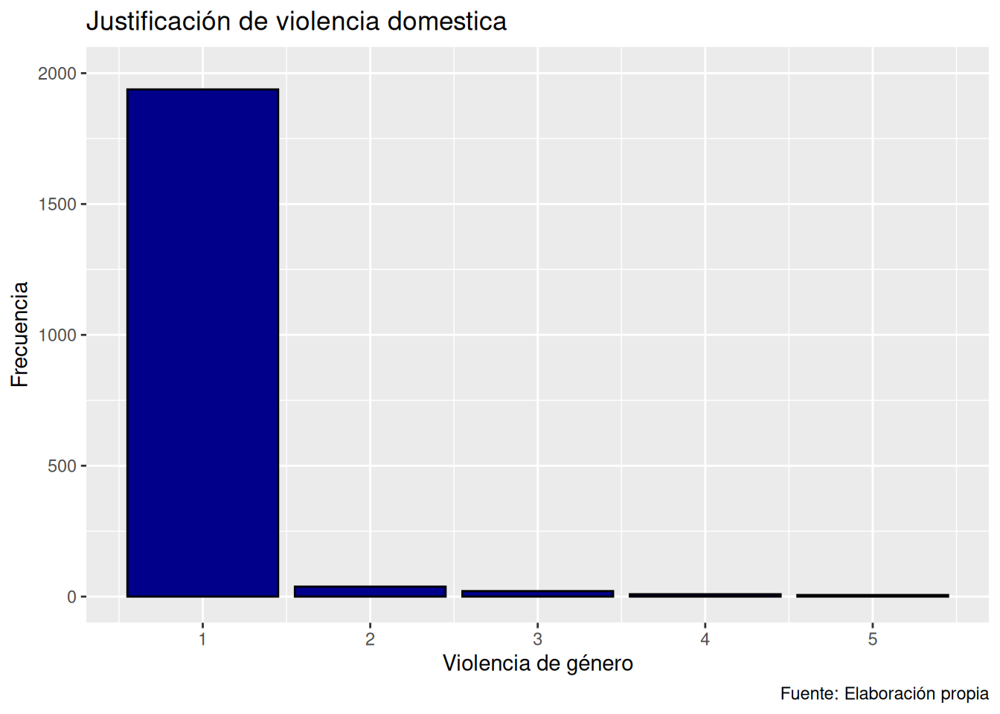

load(url("https://dataverse.harvard.edu/api/access/datafile/7245118")) Trabajo Estadistica
La justificación de la violencia en Chile
Resumen
En este estudio se abordará el concepto de justificación de la violencia, siendo la violencia un fenómeno muy presente en la sociedad chilena, y su justificación un fenómeno muy complejo fundamental para entender las dinámicas que se dan en nuestro país. Haciendo un desglose en tres subconceptos: 1) justificación de violencia hacia la institución de Carabineros, 2) justificación de violencia de género, y 3) justificación de violencia hacia delincuentes; realizaremos un análisis en relación con las variables demográficas de ingresos, edad y nivel educacional, respectivamente. Para lograr nuestro cometido hicimos uso de la Encuesta Longitudinal de Social de Chile a cargo del Centro de Estudios del Conflicto y Cohesión Social (COES), de la que extrajimos variables tales como “Justificación de violencia de: “Estudiantes tiren piedras a Carabineros”, “Marido abofetee a su mujer”, “Perseguir y golpear a delincuentes” y “Amarrar a un poste a un delincuente”.
- Introducción
En la sociedad chilena, la violencia es un fenómeno social complejo que se manifiesta de distintas formas y en distintos contextos, desde las dinámicas de género hasta conflictos de la sociedad civil con el Estado. Conocer bajo qué parámetros y dinámicas se sustenta su justificación se vuelve relevante para comprender las dinámicas de conflicto y legitimación de tipos de violencia. Este estudio aborda las justificaciones, entendiendo que reflejan un aspecto fundamental en las percepciones arraigadas en la sociedad. Como afirma Alemany Briz (2000): “Los mecanismos que justifican la violencia a pequeña escala son los mismos que la justifican a gran escala.” (p.2). Comprender los niveles de la justificación de violencia en la población chilena nos ayuda a entender la inseparable relación que tiene con la violencia en general.
Como se afirmó, la violencia se puede expresar de distintas maneras. En esto juegan un rol importante los medios de comunicación, como indica Penalva (2002) “La dictadura del tiempo real lleva a una cobertura apresurada que dificulta obtener análisis profundos y verídicos.” (p.20). En términos de género, un estudio realizado en la región de la Araucanía analiza las dinámicas de violencia de género. El estudio revela que, en consonancia con investigaciones previas en la materia en Chile, las masculinidades hegemónicas están fuertemente relacionadas con la violencia de género (Arias et al., 2017). Además, los estudios confirman que la desigualdad de género incrementa el riesgo de la violencia sexual y femicidios. Según Espinoza & Arias (2020), en Chile el 90% de las relaciones de pareja de adolescentes reportan violencia en alguna de sus formas; y esto es solamente en las relaciones adolescentes, es decir, tempranas, en la vida de los chilenos. En el ámbito institucional, se encuentra muy presente la violencia relativa a las instituciones, particularmente, a la ejercida y percibida por Carabineros: existe una relación fundamental entre las percepciones de injusticia en relación con la legitimidad institucional. En el contexto de protestas, cuando las personas sienten que son tratadas de manera injusta por parte de Carabineros, crece la deslegitimación de las instituciones (Figueiredo et al., 2023), y crece de igual forma, la justificación de la violencia ejercida contra Carabineros. Otra dimensión relevante en la justificación de la violencia ha sido la justicia vecinal. Según Delgado (2020), en Chile:
“ la justicia por mano propia se plantea como la idea de justificar perseguir y golpear a un individuo que acaba de cometer un delito, y en Chile esta actitud se ha justificado por sus ciudadanos como un tipo de violencia para establecer mayor control social” (p.12)
Así, la violencia vecinal se describe como un fenómeno en el cual los ciudadanos justifican la violencia debido a la percepción de inseguridad con el objetivo de restablecer el orden.
En la presente investigación, se buscará analizar la justificación de la violencia en Chile y las variaciones que presenta en relación a variables como, género, nivel educacional e ingreso. Tomando el concepto de “justificación de violencia” como la aceptación pública del uso de la fuerza, actos o estrategias violentas, lo cual está directamente ligado a la percepción de legitimidad que se tiene de las instituciones de justicia (Gerber, M. M., Figueiredo, A., Sáez, L., & Orchard, M., 2023). En base a lo expuesto, el objetivo de este estudio es analizar las variables que, recodificadas, representen la justificación de la violencia 1) hacia la institución de Carabineros; 2) de género; 3) hacia los delincuentes; y relacionarlas con características sociodemográficas. Para la primera utilizaremos la variable “Estudiantes tiren piedras a Carabineros”, y analizaremos la relación que tiene con los ingresos de los encuestados; para la segunda utilizaremos la variable “Marido abofetee a su mujer”, y analizaremos la relación que tiene con la edad de los encuestados; y para la tercera utilizaremos las variables “Perseguir y golpear a delincuentes” y “Amarrar a un poste a un delincuente”, y analizaremos su relación con el nivel educacional de los encuestados. Planteamos tres hipótesis que guiarán el estudio:
- Ha: Existe una relación negativa entre el nivel de ingresos percibido y la justificación de la violencia hacia carabineros desde los estudiantes. H0: No existe relación entre el nivel de ingresos percibido y la justificación de violencia hacia Carabineros desde los estudiantes.
- Ha: Existe una relación significativa entre la edad del encuestado y la justificación de que el marido golpee a su mujer. H0: No existe relación entre la edad del encuestado y la justificación de que el marido golpee a su mujer.
- Ha: Existe una relación negativa entre el nivel educacional alcanzado y la justificación de la violencia hacia delincuentes. H0: No existe una relación entre el nivel educacional alcanzado y la justificación de la violencia hacia los delincuentes.
2. Metodología
2.1 Datos: descripción detallada de los datos a utilizar
Los datos que se utilizarán para el presente informe son de carácter cuantitativo por medio de un cuestionario estructurado, correspondientes a la base de datos del Estudio Longitudinal Social de Chile “ELSOC”. La población objetivo de la encuesta son hombres y mujeres de 18 a 75 años, residentes habituales de viviendas particulares en zonas urbanas. La representatividad estimada del estudio es de, aproximadamente, un 77% de la población total del país y un 93% de la población urbana. Esta encuesta está a cargo del Centro de Estudios del Conflicto y Cohesión Social (COES). En particular, se utilizó la encuesta aplicada durante el año 2019 correspondiente a la ola 4. Además, se le añadieron a las variables sociodemográficas las variables del módulo de Conflicto Social, con el fin de obtener los datos correspondientes con el foco del tema central de la investigación.
library(pacman)
pacman::p_load(tidyverse, car, psych, sjmisc, sjPlot, sjlabelled, ggcorrplot, dplyr)
options(scipen = 999) 2.2 Variables
El tipo de medición será tipo Likert y se miden en: “Nunca se justifica”, “Pocas veces se justifica”, “Algunas veces se justifica”, “Muchas veces se justifica” y “Siempre se justifica”, y se medirán las siguientes variables:
f05_01 “Justificación de la violencia: Perseguir y golpear a delincuentes”: Actitud hacia el uso de violencia física como medio de castigo o justicia por mano propia contra personas consideradas delincuentes.
f05_02 “Justificación de la violencia: Amarrar a un poste a un delincuente”: Actitud hacia la humillación pública o el castigo físico extrajudicial contra un presunto delincuente.
f05_05 “Justificación de la violencia: Marido abofetee a su mujer”: Actitud hacia la violencia doméstica en forma de agresión física por parte del esposo hacia su pareja.
f05_07 “Justificación de la violencia: Estudiantes tiren piedras a carabineros”: Actitud hacia el uso de violencia física por parte de estudiantes contra las fuerzas policiales en el contexto de manifestaciones.
Para los fines del trabajo se agruparon y recodificaron algunas variables siendo que “Justificación de la violencia: Perseguir y golpear a delincuentes” y “Justificación de la violencia: Amarrar a un poste a un delincuente” quedaron como “Violencia Criminalidad”, también “Justificación de la violencia: Marido abofetee a su mujer” quedó como “Violencia de género” y por último “Justificación de la violencia: Estudiantes tiren piedras a carabineros” quedó como “Violencia a carabineros”
A esto se le suman las variables sociodemográficas de:
Nivel educacional : Se refiere al grado máximo de instrucción formal que una persona ha alcanzado, lo que puede ser indicativo de sus habilidades, conocimientos y oportunidades sociales. Su tipo de medición será categórico ordinal. Estas están ordenadas del 1 al 10 dependiendo el nivel educativo, estás son: 1. Sin estudios 2. Educación Básica o Preparatoria incompleta 3. Educación Básica o Preparatoria completa 4. Educación Media o Humanidades incompleta 5. Educación Media o Humanidades completa 6. Técnico Superior incompleta 7. Técnico Superior completa 8. Universitaria incompleta 9. Universitaria completa 10. Estudios de posgrado (magíster o doctorado)
Ingresos(Sueldo Líquido): Se refiere a la cantidad de dinero que una persona percibe al mes, ya sea a través de salarios, negocios, transferencias u otras fuentes. Su nivel de medición será categórico ordinal. Esto estará ordenado en 5 categorías menos de 500.000 se considera “muy bajo”, entre 500.000 y 700.000 “bajo” entre 700.000 y 1.200.000 “medio” entre 1.200.000 y 1.800.000 “alto” y desde 1.800.000 hacia arriba “muy alto”. Se tomó esta decisión debido a que en Chile, el ingreso mínimo mensual en 2024 ronda los 500.000 pesos chilenos, lo que hace que los ingresos inferiores a esta cifra se consideren como ingresos “muy bajo”
Edad: Se refiere a la cantidad de años de la persona. Por los objetivos del trabajo, se recodificó en 4 grupos etarios. Su tipo de medición será categórico ordinal. La edad recodificada en grupos permite evaluar patrones de comportamiento o actitudes en diferentes etapas de la vida.
# Seleccionar la ola
ola_4 <- elsoc_long_2016_2022.2 %>%
filter(ola == 4)
# Seleccionar variables y limpiar valores problemáticos
variables_seleccionadas <- ola_4 %>%
select(m0_sexo, m0_edad, m01, m13, f05_01, f05_02, f05_05, f05_07) %>%
mutate(
across(where(is.numeric), ~ replace(., . %in% c(-999, -88, -888, -99, 999999999), NA))
)
# Renombrar las variables
final <- variables_seleccionadas %>%
rename(sexo = m0_sexo, edad = m0_edad, niv_educativo = m01, ingresos = m13, viol_delinc = f05_01, poste_delinc = f05_02, marido_agrede_mujer = f05_05, estudiantes_agreden_carab = f05_07)
# Crear nuevas variables de violencia
tipos_de_violencia <- final %>%
mutate(
violencia_criminalidad = rowMeans(select(., viol_delinc, poste_delinc), na.rm = TRUE),
violencia_a_carabineros = estudiantes_agreden_carab,
violencia_genero = marido_agrede_mujer)
# Eliminar filas con NA
final_final <- tipos_de_violencia %>% drop_na()
# Recodificación de edad en grupos
final_final <- final_final %>%
mutate(edad_recodificada = case_when(
edad >= 18 & edad <= 29 ~ "Jóvenes",
edad >= 30 & edad <= 44 ~ "Adultos jóvenes",
edad >= 45 & edad <= 59 ~ "Adultos",
edad >= 60 ~ "Adultos mayores",
TRUE ~ NA_character_
))
#Recodificación ingresos
final_final$ingreso_recodificado <- cut(final_final$ingresos,
breaks = c(-Inf, 500000, 700000, 1200000, 1800000, Inf),
labels = c("Muy bajo", "Bajo", "Medio", "Alto", "Muy alto"),
right = FALSE)#resumen descriptivo
desc_cuantitativas <- final_final %>%
select_if(is.numeric) %>%
describe()
print(desc_cuantitativas) vars n mean sd median trimmed
sexo 1 2012 1.53 0.50 2 1.53
edad 2 2012 45.13 13.00 45 45.04
niv_educativo 3 2012 5.60 2.18 5 5.60
ingresos 4 2012 534804.81 580577.29 400000 447464.60
viol_delinc 5 2012 2.61 1.31 3 2.51
poste_delinc 6 2012 1.92 1.24 1 1.70
marido_agrede_mujer 7 2012 1.07 0.38 1 1.00
estudiantes_agreden_carab 8 2012 1.50 0.97 1 1.27
violencia_criminalidad 9 2012 2.26 1.14 2 2.13
violencia_a_carabineros 10 2012 1.50 0.97 1 1.27
violencia_genero 11 2012 1.07 0.38 1 1.00
mad min max range skew kurtosis
sexo 0.00 1 2 1 -0.11 -1.99
edad 16.31 19 78 59 0.05 -0.90
niv_educativo 2.97 1 10 9 0.18 -0.80
ingresos 222390.00 0 15000000 15000000 10.25 207.44
viol_delinc 1.48 1 5 4 0.27 -1.03
poste_delinc 0.00 1 5 4 1.14 0.12
marido_agrede_mujer 0.00 1 5 4 7.02 54.88
estudiantes_agreden_carab 0.00 1 5 4 1.99 3.22
violencia_criminalidad 1.48 1 5 4 0.73 -0.29
violencia_a_carabineros 0.00 1 5 4 1.99 3.22
violencia_genero 0.00 1 5 4 7.02 54.88
se
sexo 0.01
edad 0.29
niv_educativo 0.05
ingresos 12943.33
viol_delinc 0.03
poste_delinc 0.03
marido_agrede_mujer 0.01
estudiantes_agreden_carab 0.02
violencia_criminalidad 0.03
violencia_a_carabineros 0.02
violencia_genero 0.01# Tablas de frecuencia para variables categóricas
categoricas <- final_final %>%
select_if(is.factor)
categoricas %>%
map(~ frq(.))$ingreso_recodificado
x <categorical>
# total N=2012 valid N=2012 mean=1.72 sd=1.05
Value | N | Raw % | Valid % | Cum. %
------------------------------------------
Muy bajo | 1221 | 60.69 | 60.69 | 60.69
Bajo | 342 | 17.00 | 17.00 | 77.68
Medio | 296 | 14.71 | 14.71 | 92.40
Alto | 100 | 4.97 | 4.97 | 97.37
Muy alto | 53 | 2.63 | 2.63 | 100.00
<NA> | 0 | 0.00 | <NA> | <NA>final_final$ingreso_ordinal <- as.numeric(final_final$ingreso_recodificado)2.3 Métodos
Para contrastar la hipótesis y calcular el tamaño de efecto se hará uso del coeficiente de Spearman para contrastar “Violencia a carabineros” con la variable “Ingresos”, también se utilizará el coeficiente de Kendall Tau para relacionar la “Violencia criminalidad” con el “Nivel educacional” y por último se utilizará el test de Chi-cuadrado para el contraste entre “Violencia de género” y la variable de “Edad”.
Spearman - Violencia hacia Carabineros e Ingresos (Recodificada en Ordinal)
Elegimos utilizar el coeficiente de correlación de Spearman por las características de las variables que decidimos analizar, es decir, dos variables ordinales que no necesariamente tienen una relación lineal, y Spearman nos ayuda al análisis de esta relación monótona, lo que detectara si a medida que el ingreso aumenta (o disminuye), la justificación también disminuye o aumenta de manera consistente, sin que esta relación sea estrictamente lineal. Además, con Spearman los valores sensibles que puede tener la variable de ingresos quedan fuera del análisis, ya que trabaja directamente con rangos y no con los valores originales.
Chi cuadrado - Marido abofetea a su mujer y Edad (Recodificada en Ordinal)
En este caso, utilizamos la prueba de Chi cuadrado para el análisis de las variables Edad y Marido abofetea a su mujer, esto porque el análisis que queremos hacer entre estas dos variables es netamente el de buscar una relación entre ellas, es decir, si existe una relación entre la edad y la justificación en la violencia de género. Al recodificar la variable de edad, esta quedó en 4 categorías, siendo estas: jóvenes, adultos jóvenes, adultos y adultos mayores. Por ello, las dos variables a analizar quedaron como variables categóricas, ya que, la violencia de género es de tipo likert y la prueba de Chi cuadrado era las más adecuada para el fin de buscar aquella relación.
Kendall Tau - Violencia hacia la criminalidad y Nivel educativo (Recodificado en Ordinal)
Se utilizará el coeficiente de Kendall Tau para relacionar “Violencia criminalidad” con “Nivel educacional” esto por que ambas variable son ordinales cosa que es necesaria para este tipo de correlación, también lo que queremos ver es si a mayor nivel educativo, hay una tendencia consistente a justificar menos la violencia criminalidad, esto se verá de mejor manera gracias a que este coeficiente mide la fuerza de esa relación (intensidad), lo que resulta útil para interpretar tendencias sociales.
#Spearman
# Verificar los niveles del factor
levels(final_final$ingreso_recodificado)[1] "Muy bajo" "Bajo" "Medio" "Alto" "Muy alto"# Mapear manualmente los niveles a valores numéricos
final_final$ingreso_recodificado <- recode_factor(
final_final$ingreso_recodificado,
"Muy bajo" = 1,
"Bajo" = 2,
"Medio" = 3,
"Alto" = 4,
"Muy alto" = 5
) %>%
as.numeric()
# Verificar que ahora es numérico
class(final_final$ingreso_recodificado)[1] "numeric"spearman_data <- final_final %>%
select(violencia_a_carabineros, ingreso_recodificado) %>%
drop_na()
# Realizar el test de Spearman
spearman_data <- cor.test(
spearman_data$violencia_a_carabineros,
spearman_data$ingreso_recodificado,
method = "spearman"
)Warning in cor.test.default(spearman_data$violencia_a_carabineros,
spearman_data$ingreso_recodificado, : Cannot compute exact p-value with ties# Imprimir los resultados
print(spearman_data)
Spearman's rank correlation rho
data: spearman_data$violencia_a_carabineros and spearman_data$ingreso_recodificado
S = 1320815450, p-value = 0.2259
alternative hypothesis: true rho is not equal to 0
sample estimates:
rho
0.02700733 #Kendall tau violencia y nivel educativo
kendall_data <- final_final %>%
select(violencia_criminalidad, niv_educativo)
# Realizar el test de correlación de Kendall Tau
kendall_tau_result <- cor.test(
kendall_data$violencia_criminalidad,
kendall_data$niv_educativo,
method = "kendall"
)
print(kendall_tau_result)
Kendall's rank correlation tau
data: kendall_data$violencia_criminalidad and kendall_data$niv_educativo
z = 0.84761, p-value = 0.3967
alternative hypothesis: true tau is not equal to 0
sample estimates:
tau
0.0145568 #Chi cuadrado marido abofetea a su mujer y edad
tabla_chi <- table(final_final$marido_agrede_mujer, final_final$edad_recodificada)
chi_cuadrado_result <- chisq.test(tabla_chi)Warning in chisq.test(tabla_chi): Chi-squared approximation may be incorrect#Chi cuadrado violencia criminalidad y nivel educativo
grafico_data <- as.data.frame(tabla_chi)
colnames(grafico_data) <- c("violencia_criminalidad", "niv_educativo", "Frecuencia")
# Imprimir los resultados
print(chi_cuadrado_result)
Pearson's Chi-squared test
data: tabla_chi
X-squared = 9.4289, df = 12, p-value = 0.66593. Análisis
3.1 Análisis descriptivo
# Diagrama justificación violencia hacia carabineros
ggplot(data = final_final,
mapping = aes(x = estudiantes_agreden_carab)) +
geom_bar(color = "black", fill = "red") +
scale_y_continuous(limits = c(0, 2000)) +
labs(title = "Justificar que estudiantes tiren piedras a Carabineros",
x = "Justifica la agresion de estudiantes",
y = "Frecuencia",
caption = "Fuente: Elaboración propia")
En el gráfico que se muestra arriba, se puede observar la variable: “justificar que estudiantes tiren piedras a carabineros”, donde se puede ver como la gran mayoría de las personas no justifica este tipo de violencia, encontrándose la mayor parte de las respuestas en el valor 1, que significa que nunca lo justifica, y así baja paulatinamente hasta justificarlo siempre, que se encuentra con la menor frecuencia de respuestas, como se puede ver en el gráfico.
#Grafico Justificación violencia hacia delincuentes
ggplot(data = final_final,
mapping = aes(x = violencia_criminalidad)) +
geom_bar(color = "black", fill = "green") +
scale_y_continuous(limits = c(0, 600)) +
labs(title = "Justificar violencia hacia delincuentes",
x = "Violencia hacia delincuentes",
y = "Frecuencia",
caption = "Fuente: Elaboración propia")
En el gráfico presentado se puede observar que hay una distribución más balanceada entre la frecuencia de las variables, considerando perseguir a los delincuentes y agredirlos y amarrarlos a un poste, lo que da un resultado a tener en consideración al ser el gráfico más equilibrado entre los mostrados. Con una media de 2.25936 la variable indica que hay una percepción que, aunque los encuestados no se sitúen en su mayoría en que se justifique la práctica, si son niveles más alto en comparación con los niveles de justificación de la violencia en los otros aspectos ilustrados.
# Diagrama justificación violencia domestica
ggplot(data = final_final,
mapping = aes(x = marido_agrede_mujer)) +
geom_bar(color = "black", fill = "darkblue") +
scale_y_continuous(limits = c(0, 2000)) +
labs(title = "Justificación de violencia domestica",
x = "Violencia de género",
y = "Frecuencia",
caption = "Fuente: Elaboración propia")
En este gráfico podemos observar la variable de “Violencia de género”, donde existe una tendencia más que marcada hacia la respuesta de “nunca lo justifica”, lo que quiere decir que no hay (o hay muy pocas) respuestas que se alejen de dicha respuesta, lo que a su vez indica que a medida que se aleja de la opción 1 “no justifica nunca” la frecuencia va bajando hasta hacerse casi o prácticamente nula.
3.2 Análisis estadístico bivariado
CORRELACIÓN DE SPEARMAN
#Spearman
# Verificar los niveles del factor
levels(final_final$ingreso_recodificado)NULL# Mapear manualmente los niveles a valores numéricos
final_final$ingreso_recodificado <- recode_factor(
final_final$ingreso_recodificado,
"Muy bajo" = 1,
"Bajo" = 2,
"Medio" = 3,
"Alto" = 4,
"Muy alto" = 5
) %>%
as.numeric()Warning in recode.numeric(.x, !!!values, .default = .default, .missing =
.missing): NAs introduced by coercion# Verificar que ahora es numérico
class(final_final$ingreso_recodificado)[1] "numeric"spearman_data <- final_final %>%
select(violencia_a_carabineros, ingreso_recodificado) %>%
drop_na()
# Realizar el test de Spearman
spearman_data <- cor.test(
spearman_data$violencia_a_carabineros,
spearman_data$ingreso_recodificado,
method = "spearman"
)Warning in cor.test.default(spearman_data$violencia_a_carabineros,
spearman_data$ingreso_recodificado, : Cannot compute exact p-value with ties# Imprimir los resultados
print(spearman_data)
Spearman's rank correlation rho
data: spearman_data$violencia_a_carabineros and spearman_data$ingreso_recodificado
S = 1320815450, p-value = 0.2259
alternative hypothesis: true rho is not equal to 0
sample estimates:
rho
0.02700733 Según el valor del coeficiente de Spearman (0,027), podemos deducir que, al ser un valor muy cercano a 0, la correlación entre las dos variables es casi nula. La relación entre los ingresos de los encuestados y la justificación de violencia hacia Carabineros es muy ligeramente positiva, es decir, a mayor nivel de ingreso mayor justificación de la violencia; pero esta ni siquiera es estadísticamente significativa. Además, con un valor p obtenido de (0,2259), muy por encima de 0,05, se concluye que no hay evidencia significativa para rechazar la hipótesis nula de que no existe relación entre ambas variables. Por otro lado, el valor de la estadística de prueba de Spearman (S = 1321), muy alejado de 0, refleja que las diferencias entre los rangos de las dos variables es muy alta, o sea, que no existe una relación monotónica significativa entre las dos variables.
ANÁLISIS DE CHI-CUADRADO
#Chi cuadrado marido abofetea a su mujer y edad
tabla_chi <- table(final_final$marido_agrede_mujer, final_final$edad_recodificada)
chi_cuadrado_result <- chisq.test(tabla_chi)Warning in chisq.test(tabla_chi): Chi-squared approximation may be incorrect#Chi cuadrado violencia criminalidad y nivel educativo
grafico_data <- as.data.frame(tabla_chi)
colnames(grafico_data) <- c("violencia_criminalidad", "niv_educativo", "Frecuencia")
# Imprimir los resultados
print(chi_cuadrado_result)
Pearson's Chi-squared test
data: tabla_chi
X-squared = 9.4289, df = 12, p-value = 0.6659Dado que el valor p obtenido de la prueba Chi-cuadrado es mucho mayor a 0,05, ya que fue de 0,6659, no es posible rechazar la hipótesis nula. Es decir, no hay evidencia estadísticamente significativa para afirmar que existe una asociación entre la edad y la justificación de que el marido abofetee a su mujer, y se podría decir que ambas variables son independientes en esta muestra. Además, los grados de libertad obtenidos en la prueba fueron 12, lo que indica que las variables analizadas tienen múltiples categorías (4 grupos para la edad y 5 niveles en la actitud hacia la violencia), esto implica que el análisis tiene que considerar una tabla de contingencia con un número bastante grande de combinaciones entre categorías. Con este valor de grados de libertad, se requiere un valor de Chi-cuadrado muchísimo más alto para obtener una diferencia significativa, esto dado a que el valor crítico es de aproximadamente 21,920; lo que refuerza la conclusión de que no se encontró una relación significativa entre las variables en este caso.
CORRELACIÓN DE KENDALL TAU
print(kendall_tau_result)
Kendall's rank correlation tau
data: kendall_data$violencia_criminalidad and kendall_data$niv_educativo
z = 0.84761, p-value = 0.3967
alternative hypothesis: true tau is not equal to 0
sample estimates:
tau
0.0145568 El resultado de la correlación de Kendall Tau entre las variables de violencia hacia delincuentes con la variable de nivel educativo es de 0.0145568, El valor obtenido indica una correlación muy baja entre las dos variables. El valor es cercano a cero, por lo que sugiere que no existe una relación significativa entre el nivel educativo de las personas y la justificación de estos en la violencia hacia los delincuentes (incluyendo perseguirlos, golpearlos y amarrar a un poste). Esta consideración refuerza la hipótesis nula, que sostiene que no hay relación significativa entre el nivel educacional y la justificación de la violencia hacia los delincuentes. Es posible que el enfoque específico de los datos presentados presente complicaciones y justifique el resultado dado. Es por esto, que otras interpretaciones en base a otra codificación de la variable de nivel educativo podrían indicar correlaciones distintas.
4. Conclusiones
El trabajo realizado en torno al análisis estadístico de la justificación de la violencia en Chile da cuenta de resultados significativos; con esto, también hay que tener en cuenta consideraciones del estudio, la base de datos, y los resultados presentados. En primer lugar, la correlación de Spearman entre la violencia hacia Carabineros y los ingresos —.
El análisis de la relación entre el nivel educativo con la justificación de la violencia hacia los delincuentes mostró una correlación baja. De este modo, se encontró que no existe una tendencia clara entre el nivel educativo y la justificación de la violencia hacia los delincuentes, contrariamente a lo que se podría esperar, y que fue la hipótesis planteada, de que el nivel educativo influye en la justificación de efectuar actos violentos en contra de delincuentes. El resultado plantea la necesidad de reconsiderar las variables consideradas y explorar más factores asociados a la justificación de la violencia hacia delincuentes.
Finalmente, el análisis de Chi-cuadrado entre la edad y la justificación de la violencia de género no arrojó resultados estadísticamente significativos (valor p = 0.6659), lo que da a entender que no existe una relación fuerte entre ambas variables. En primera instancia, se consideró la variable edad como un factor que podría ser significativo para comprender un aspecto de la relación en la justificación con la violencia de género; sin embargo, la edad no parece ser un factor determinante en la justificación de la práctica mencionada.
Es posible que la codificación de las variables haya afectado el resultado de los estudios porque al elegir variables siempre corremos el riesgo de realizar el estudio bajo sesgos que nos impiden observar el panorama completo de la investigación que pretendemos realizar, a esto debemos sumarle que la base de datos – la encuesta – con la que realizamos este estudio, se realizó en el año 2019, al comprender esto y saber todos los sucesos que han impactado en las percepciones de los chilenos desde entonces puede haber cambiado ciertos aspectos de esta, por lo que hay podemos encontrar otra limitación.
Referencias bibliográficas
Alemany Briz, J. (2000). Mecanismos de justificación de la violencia y cultura de paz. Revista de Fomento Social, (55), 419.433. https://doi.org/10.32418/rfs.2000.219.2488
Arias, L., Peña, J. & Sáez, F. (2017). Masculinidad, Socialización y Justificación de la Violencia de Género. El Caso de la Región de la Araucanía (Chile). Masculinities and Social Change, 6(2), 142-165. https://doi.org/10.17583/mcs.2017.2235
Delgado, J. (2020). Delincuencia y justificación de la violencia: Justicia por mano propia en Chile [Tesis de maestría, Universidad de Chile]. Repositorio Institucional. https://repositorio.uchile.cl/bitstream/handle/2250/179393/Tesis%20-%20Jorge%20Delgado.pdf?sequence=1
Espinoza, S., & Arias, A. (2020). Violencia de pareja en estudiantes secundarios de Osorno (Chile). Revista de Ciencias Humanas y Sociales, (93), 300–314. https://dialnet.unirioja.es/servlet/articulo?codigo=7621434
Gerber, M., Figueiredo, A., Sáez, L. & Orchard, M. (2023). Legitimidad, Justicia y Justificación de la Violencia Intergrupal entre Carabineros y Manifestantes en Chile. Psykhe (Santiago), 32(1), 1-15. https://dx.doi.org/10.7764/psykhe.2021.31721